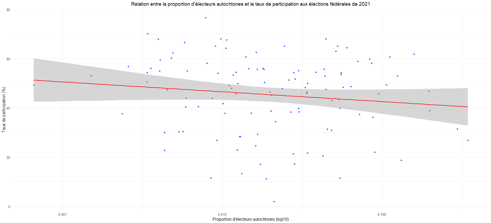
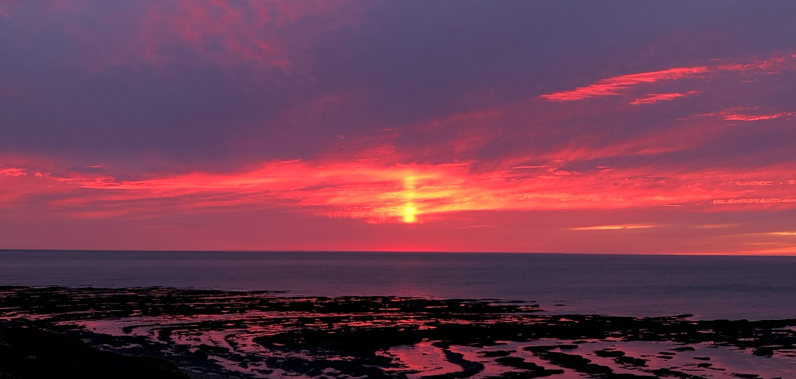
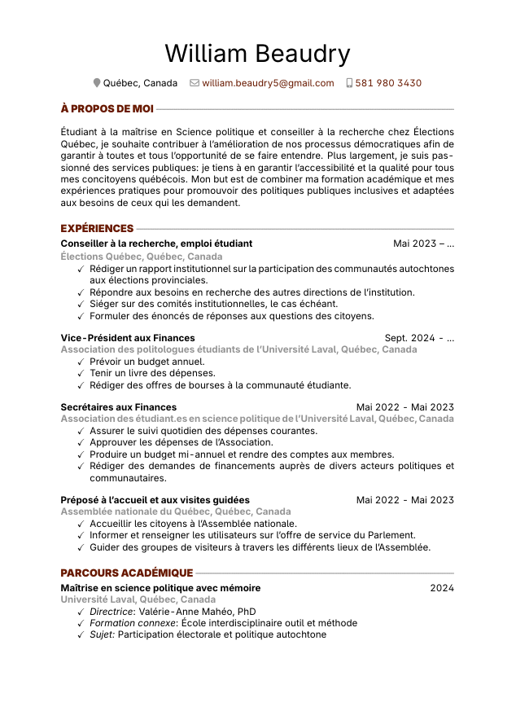

Plus c'est mieux ?
La proportion d'électeurs autochtones dans une circonscription a-t-elle une influence positive sur la participation électorale ?
Politologue, passionné de l'analyse rigoureuse de la politique !

Politologue à mes heures, apprenti chercheur et bien plus
Voici comment un sondage me décrirait : 1999, H, Québec, Baccalauréat, Étudiant, Francophone, Sans emploi.
Pour en apprendre plus sur mon parcours professionnel et académique ainsi que les projets et publications sur lesquels j'ai travaillés, vous trouverez le tout sur cette page !
Je mène à terme une maîtrise en science politique avec mémoire à l'Université Laval cet automne. Mes thèmes de recherche recoupent la participation politique, les populations autochtones et l'analyse quantitative de données de sondages.
Je participe moi-même à la vie politique québécoise au-delà de quelques contributions scientifiques: je me présente comme candidat du parti Nul dans la circonscription de Chauveau.
Un parcour marqué par la recherche, la vulgarisation de phénomènes complexes et le travail d'équipe.
Recenser la littérature sur la participation politique des Autochtones. Rédiger une revue de littérature exhaustive sur la participation politique des Autochtones au Québec, au Canada et dans le monde. Offrir des pistes de recherches originales pour approfondir notre compréhension des barrières à la participation des Autochtones.
Analyser la participation électorale des communautés autochtones aux élections provinciales depuis 2007. Produire des recommandations institutionnelles pour améliorer l'accès au processus électoral dans les communautés autochtones. Vulgariser les résultats dans un rapport institutionnel publié en 2026.
Évaluer les apprentissages des étudiants et des étudiantes à partir des grilles de correction de la professeure.
Expliquer lefonctionnement des institutions parlementaires et le processus législatif. Adapter le contenu des visites guidées en fonction des connaissances du groupe de visiteur·euses.
Superviser les opérations électorales et accueillir les électrices et électeurs. Vérifier l'identité des votants et assurer le bon déroulement du scrutin.
Moyenne cumulative : 4,14/4,33 Titre : La participation politique des Autochtones au Canada : dépasser le vote pour comprendre la diversité des moyens de participation et d'actions politiques. sous la direction de la professeure Valérie-Anne Mahéo, Ph.D.
Moyenne cumulative : 3,92/4,33 Intérêts principaux : comportement politique, institutions politiques et gouvernance, évaluation des politiques publiques.
Sciences humaines, profil Civilisations et histoire.
Mon curriculum vitæ consultables directement en ligne.

Document de référence utilisé pour mon projet d'analyse de la participation électorale dans les communautés autochtones.
Présentation sur les modalités d'inscription à la liste électorale.
Cahier de recherche portant sur la participation électorale des communautés autochtones, réalisé sous la supervision de Juliette Samson et de la professeure Valérie-Anne Mahéo.
Jetez un coup d'oeil aux projets en cours que je mène !

La proportion d'électeurs autochtones dans une circonscription a-t-elle une influence positive sur la participation électorale ?
Pour entrer en contact, n'hésitez pas à m'envoyer un courriel ou à visiter mes médias sociaux. Il me fera plaisir de répondre dans les plus brefs délais.